SciOps Elements from ReproNim
 @yarikoptic
@yarikoptic 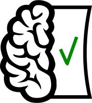
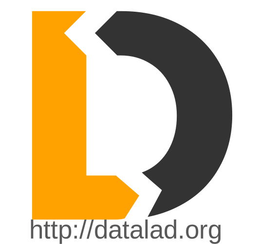
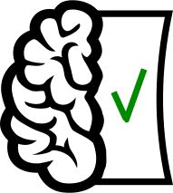
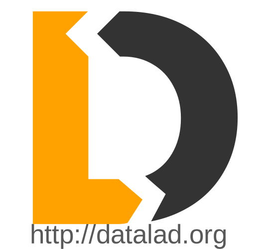
 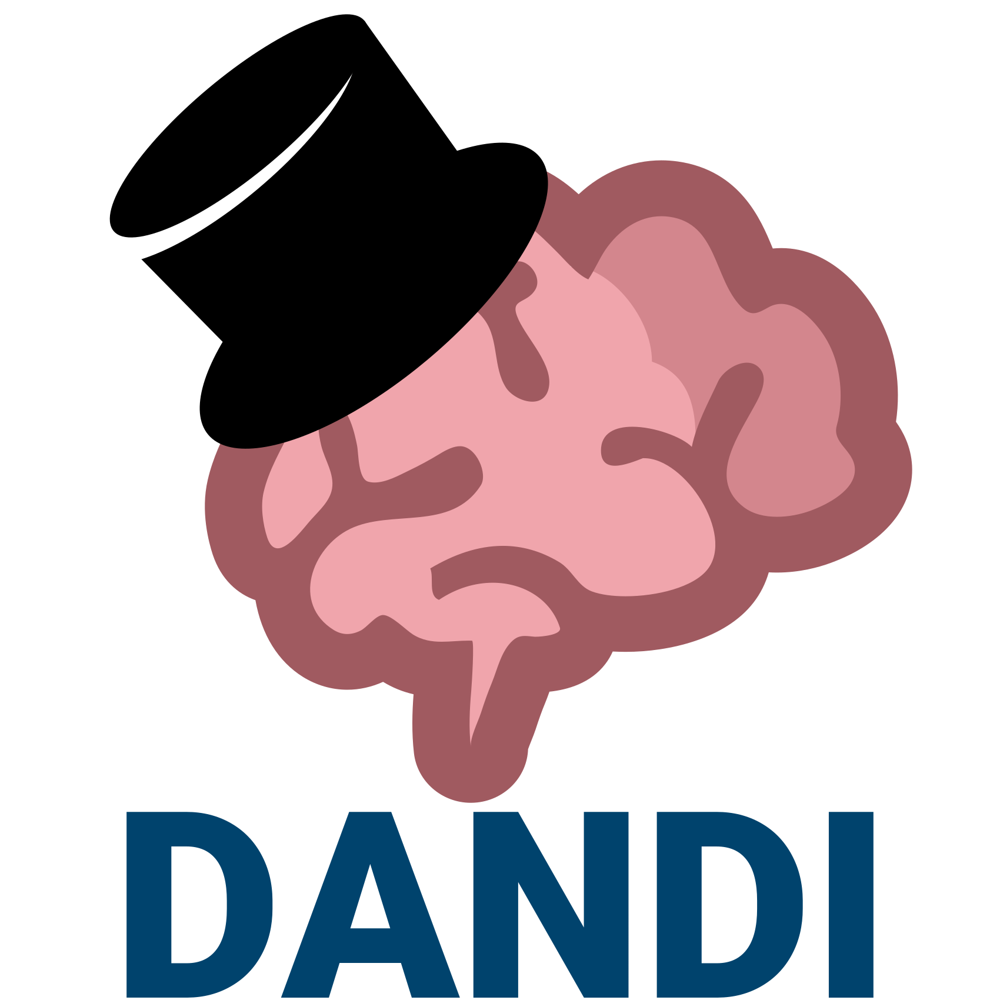
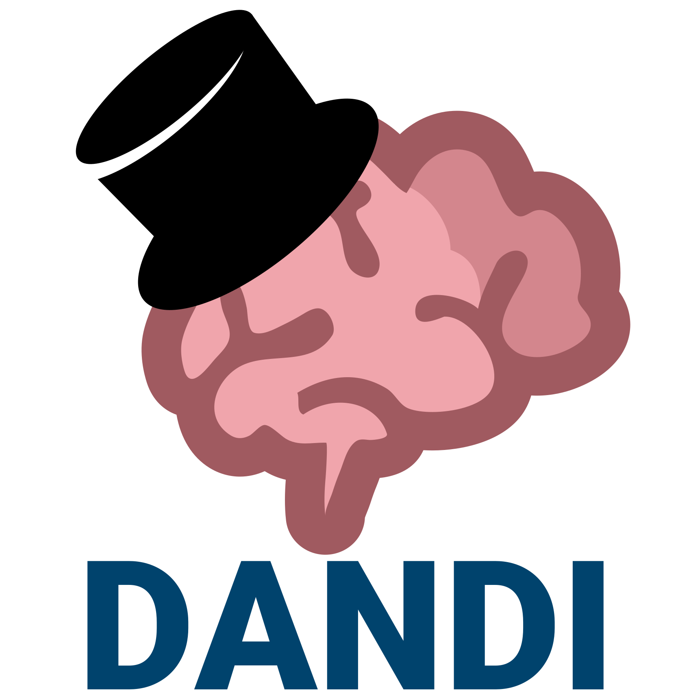
Acknowledgments


YODA style OpenNeuro Derivatives from CP5* OpenNeuro
Explore/obtain yourself from https://github.com/OpenNeuroDerivatives
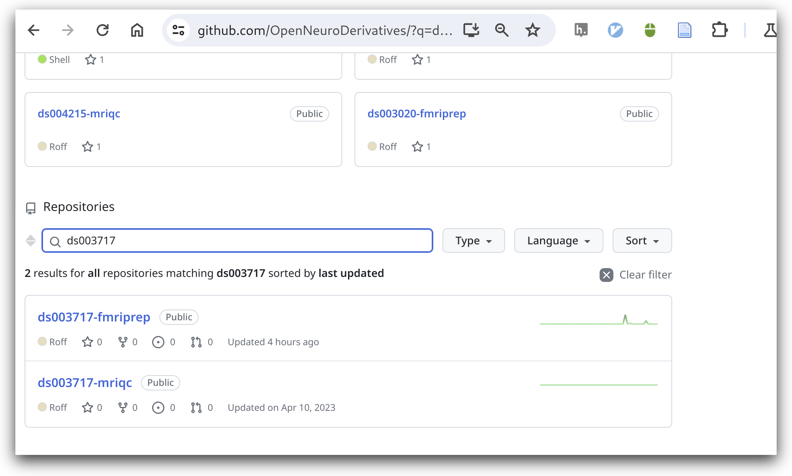
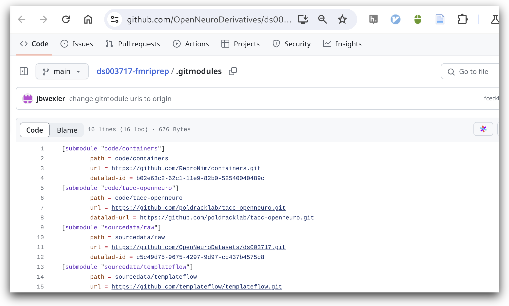
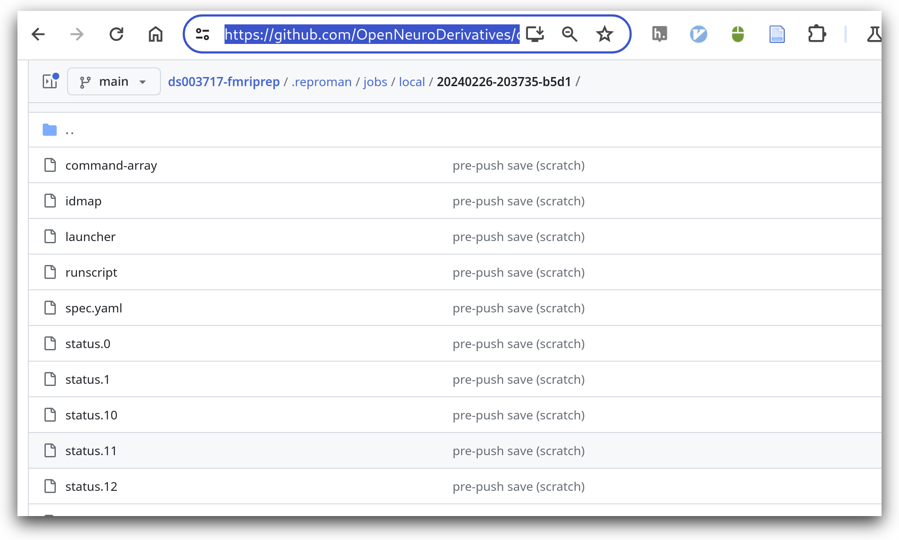
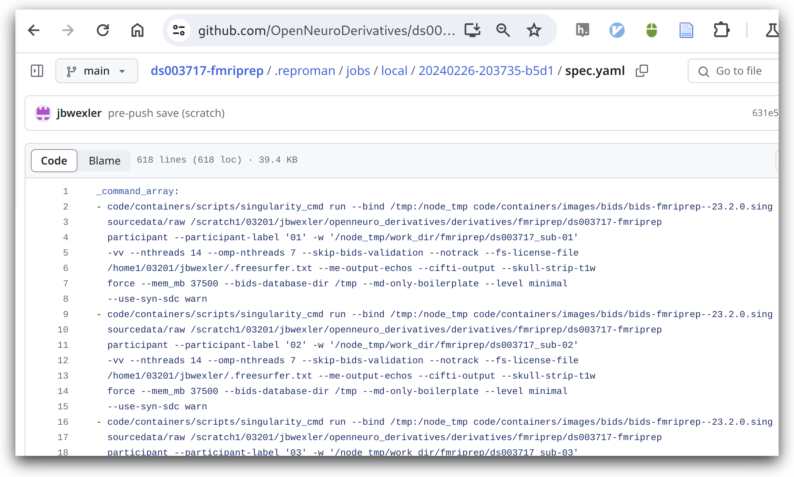
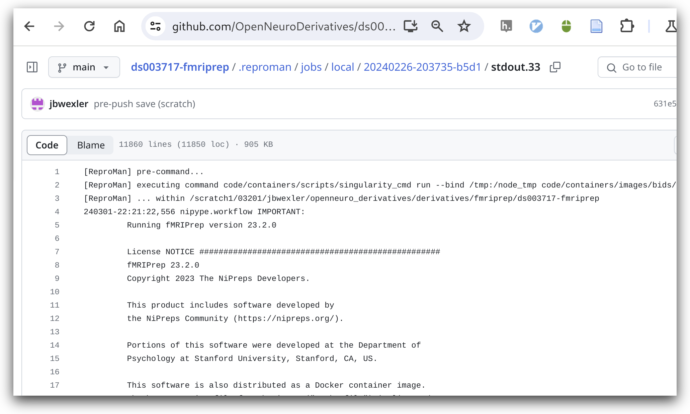